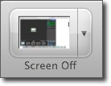

Record voice narration
Record voice narration
Record audio only:
- Open Camtasia or select File > New Recording.
- Click to disable the screen option.

- Enable the desired audio (microphone or system audio).

- Click the Record button to start recording.
After recording, the audio clip appears in the Media tab.
Record voice narration:
- Open Camtasia or select File > New Recording.
- Click to disable screen recording.
- Microphone recording is enabled by default. Select the audio device from the dropdown.
- Test the audio level by talking as you would during recording. You may need to lower the audio input volume if the audio input meter displays any red.
- Mute the system audio and disable the system audio recording.
- Click the Record button to start recording or press Command-Shift-2.
- Open the video clip to narrate.
- Press Command-Option-2 to stop the recording or Command-Shift-2 to pause the recording.
After recording, the audio clip appears in the Media tab.
See also
Replace a section of audio